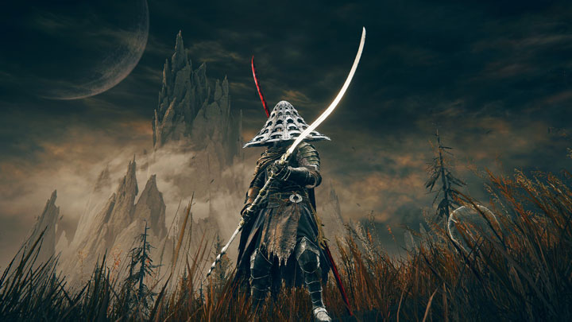

Now ↓
2024.09.29 - Sunday

Having a very nice weekend at home. Finishing a puzzle, getting way into a novel, reading RSS feeds, hitting up the breakfast diner. You know, cool shit like that.
Playing: Elden Ring (knee-deep in the DLC)
Listening: Death Grips – The Powers That B
Reading: Perfume – Patrick Süskind
Posts ↓
2024.10.04 - Friday
Anyway, look at my cute cat.
2024.10.04 - Friday
RIP Cohost.org. I had a nice time. I'm also trying to avoid over inflating that website's importance. But it shutting down feels like the end of something. A last gasp. Social media is essentially over, as far as I'm concerned. Personal sites, forums, and RSS feeds are the future. And that's not a bad way to go, I guess.
2024.09.30 - MondayPuzzle update: we (finally) finished and all the pieces were present! I take back the disparaging comments I made earlier about our cats. They're good boys, afterall.
2024.09.27 - FridayListened to sad music all morning and have bummed myself out. (This is a rake I will continue to step on.) Anyway, I've said this before, but If I Didn't Have Your Love by Leonard Cohen is one of the best love songs ever written.
2024.09.26 - ThursdayPushed a small update to the Links page. There's now (the start of) an 88x31 button wall. Check it out and visit some cool websites.
2024.09.23 - Monday
Where the magic happens. (I strongly recommend grabbing a photo of the places you spend your time. It's nice to have something to look back on if things change.)
2024.09.22 - SundayI am now prepared for the Cohost shutdown. Got a solid setup going here. Finished making a list of the people I want to keep an eye on. And I’m becoming a total RSS sicko. See you on the other side.
2024.09.21 - SaturdaySeeing those giant skeletons around town. The greatest innovation in Halloween decor that's happened in my lifetime, by far.
2024.09.19 - Thursday
Took this photo a couple nights ago. Feels like something I would've taken with my shitty phone in like 2008 (non-derogatory).
2024.09.19 - Thursday
Puzzle progress report: The cats finally fucked with the puzzle. Found some pieces down the hall and one in the linen closet. It was bound to happen, I guess. This whole thing will probably end in frustration. So it goes.
2024.09.18 - Wednesday
We’ve been going to the gym lately, which has been great overall. (Who would have thought?) But the big thing they don’t tell you is how much time it takes. Work a full-time job and then also go to another place and exercise for like an hour? A total day melter.
2024.09.16 - Monday
Finally figured out the basics of setting up an RSS feed. Sharing my notes, in case it can be of help to anyone else. This also goes over the basics of rosting (RSS direct posting). Check it out.
2024.09.16 - Monday

I will 100% post exclusive cat pics here. This is an old one that I had on hand to test things out. So, uh, stay tuned.
2024.09.15 - Sunday
Maybe TMI but I got a vasectomy earlier this month and I highly recommend it. Not a big deal and it guarantees a bright, childless future. Posting this because if I had known how easy it was earlier, I probably would have done it years ago.
2024.09.15 - Sunday

I'm into cassette tapes again. The last time I regularly used a cassette player was probably in middle school. Having a very nice time with this lil guy from Turntable Labs. Blessed to not be an audiophile.
2024.09.14 - Saturday
When all the good places to post go away, you have to create your own. This is a total ripoff (with permission) of whack.zone. I plan on posting little updates and occasional thoughts here. You can follow along via the Atom feed, if you'd like.
You've reached the very bottom. Back to top.